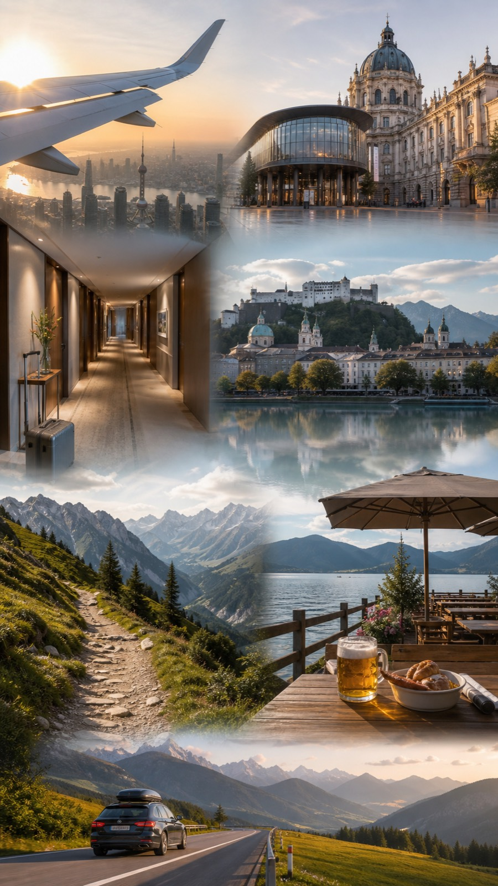
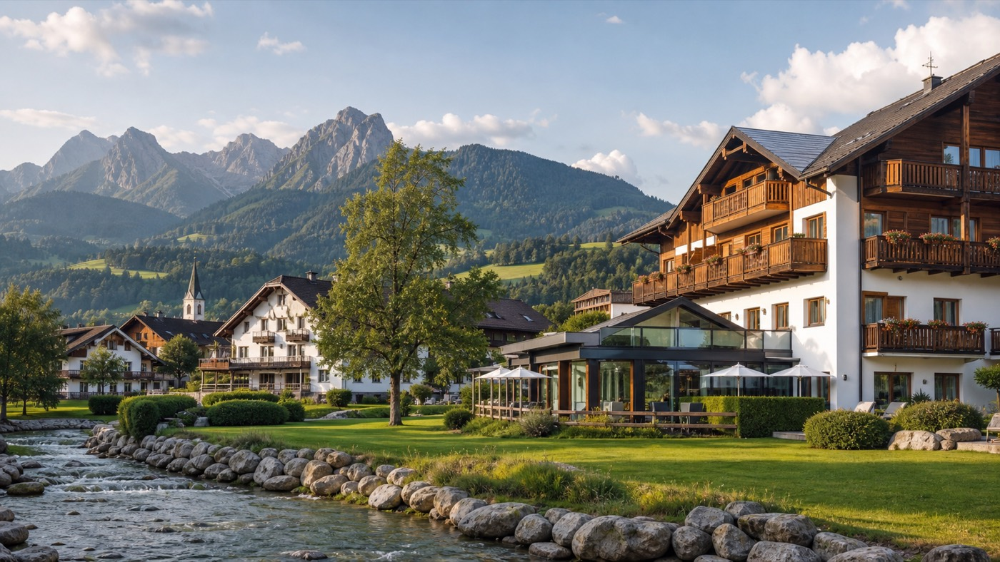
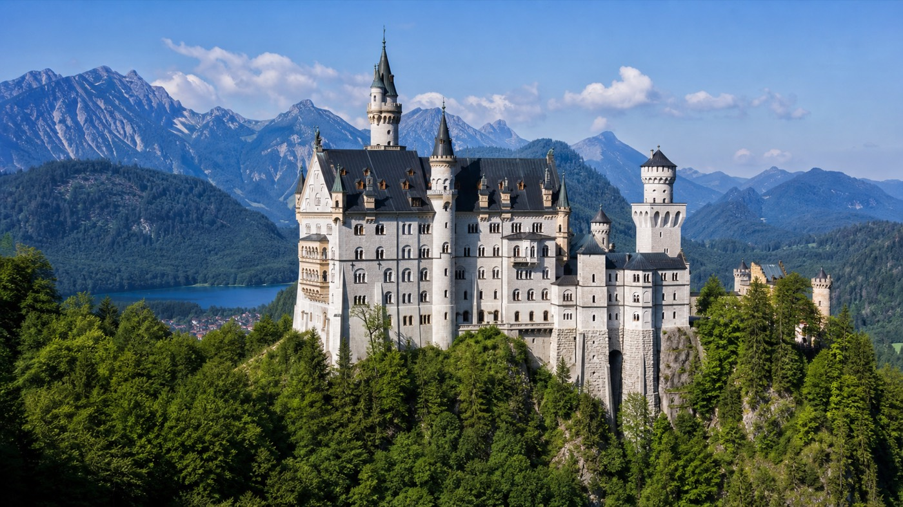
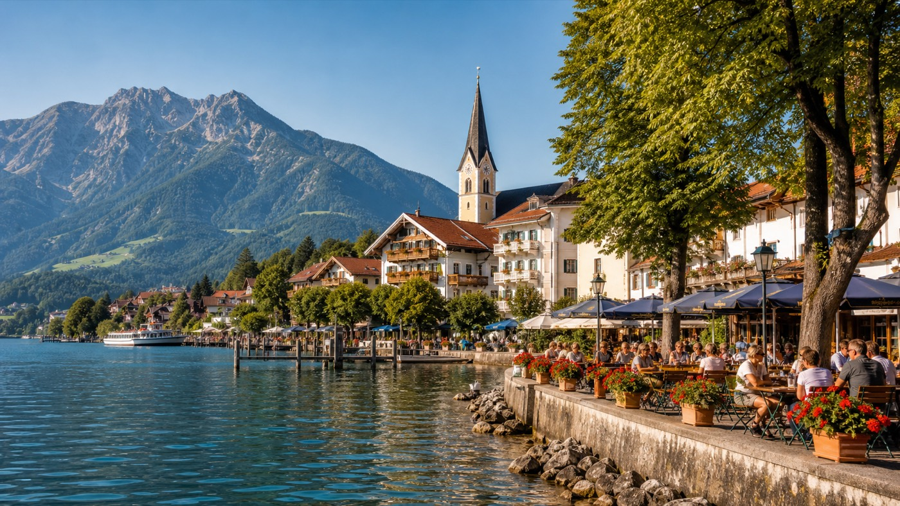

浦东机场假日酒店
CA1866 23:20 抵达 PVG T2 后，当晚住上海浦东机场假日酒店；不再按 T1 候机过夜处理。

6月22日出发 · 7月3日返沪
CGF Vienna 会议行程、Allgäu 徒步主线、Tegernsee 收尾段，统一整理为手机端日程手册。
当前速查
行程简报
这次欧洲行的主轴分为三段：6/24 至 6/26 维也纳 CGF 峰会，6/29 至 6/30 Allgäu 徒步主战段，7/1 Tegernsee 收尾并飞回阿姆斯特丹。
会场以 Austria Center Vienna 为核心，重点放在中国场次、AI 落地、供应链与零售转型。
6/23 晚住 citizenM Schiphol；7/1 晚以 AMS 机场 Hilton 为准。
6/30 早晨 06:50 出租车出发，49 路方案已否决，酒店到达后完成预约。
6/22 住上海浦东机场假日酒店；6/29 早离队，不去成龙中餐馆；装备采购地点为 World of Outdoor Sonthofen；Prinz-Luitpold-Bad 已订。
执行速查
这里放临场最容易查错的信息：住哪、去哪、什么时候办手续、行李怎么挂。
CA1866 23:20 抵达 PVG T2 后，当晚住上海浦东机场假日酒店；不再按 T1 候机过夜处理。
KL896 19:10 抵达 AMS，约 19:40 出关；20:00 入住 citizenM Schiphol，航站楼内步行可达，目标 21:30 早睡。
08:35 抵达 VIE 后，CAT 到 Wien Mitte，09:30 Hyatt Regency Vienna 寄存行李并快速换装，10:15 打车去 Austria Center Vienna。
Westin 大堂 Sixt 取奥迪 A5；13:30 World of Outdoor Sonthofen 装备采购；到 Prinz-Luitpold-Bad 后预约 Detox Massage、06:50 出租车和 05:30 打包早餐。
17:30 MUC Sixt 还车；18:00 KLM check-in，行李挂 AMS，不挂 PVG；20:50 KL1858 起飞；22:25 抵达 AMS 后住机场 Hilton。
10:00 KLM Counter 9 check-in；10:30 欧盟退税，先 Customs 盖章，再 Premier Tax Free / Global Blue；慕尼黑不办退税。
每日议程
按日期展开后，可直接查看当天的时间轴、关键地点、会议场次和执行动作。
CGF 全球执行总裁，负责开幕定调。重点听他如何把本届主题“The Adaptive Edge”落到 AI、可持续和行业协作。
McCain Foods 总裁兼 CEO，比利时人，2013 年加入麦凯恩任 CFO，2017 年升任 CEO。麦凯恩是全球最大冷冻薯条供应商，家族企业属性明显。
Tesco 集团 CEO，爱尔兰人，曾在 Walgreens Boots Alliance 任职 20 年，2020 年 10 月起执掌 Tesco。重点价值是英国零售龙头视角。
奥地利联邦总统，1944 年生，俄罗斯-爱沙尼亚后裔，前绿党党魁。2017 年首任，2022 年连任至 2028 年。
欧莱雅大众化妆品事业部总裁，24 年欧莱雅老兵，曾任欧莱雅中国 CEO，会说中文。晚宴最值得优先建立连接，切入欧莱雅大众线与华南渠道合作。
屈臣氏集团 CEO，港人，前赛艇运动员，2024 年 5 月升任。屈臣氏全球约 17,000 家店，健康美妆与华南渠道有较强相关性。
海柔创新创始人兼 CEO，深圳起家，2016 年成立，仓储箱式机器人全球领跑者。重点对应嘉荣 DC 仓储自动化 POC。
新石器创始人兼 CEO，2018 年成立，L4 级自动配送车量产标杆，主打夜间配送，已部署深圳、首尔等市场。
智元机器人联合创始人代表，2023 年成立于上海，强调全栈机器人平台和量产能力。适合观察人形机器人在零售和工业场景的长期可能性。
Ahold Delhaize 总裁兼 CEO，荷兰人，2018 年起任 CEO，2027 年退休。可重点听欧洲零售对健康食品与供应链可持续的表述。
Haleon CEO，36 年消费保健行业经验，原 GSK 消费保健业务分拆掌门。公开强调中国对 Haleon 至关重要。
AWS 零售、餐饮、快消业务全球负责人，25 年供应链与零售 IT 经验。重点听 AI 从试点走向生产环境的方法。
FT 编辑委员会成员、剑桥国王学院院长，人类学博士，著名财经评论者。适合补充地缘经济与消费品行业的宏观判断。
Eurasia Group 总裁、地缘政治学家。2026 年初发布“Top Risks 2026”，重点关注美国政治革命、欧洲压力、中东动荡和 AI 失序。
欧莱雅集团 CEO，2021 年起任，是欧莱雅历史上少数集团 CEO 之一。晚宴场景适合观察欧莱雅全球策略与区域增长重点。
AWS 零售与 CPG 总监，亚马逊 20 年老兵，曾参与 Amazon Business 转型。重点价值在于 AI 项目从试点到规模化的执行路径。
麦当劳全球首席影响力官、执行副总裁，2022 年加入麦当劳，曾任 ABC News 执行制片人。适合观察大型连锁品牌如何做 ESG 叙事和落地。
达能集团 CEO，法国人，1964 年生，2021 年起任职，曾任 Barry Callebaut CEO。关于 GLP-1 的观点是“用户更需要营养密度高的食品”。
Cencosud 相关高管代表，拉美大型零售集团背景。重点听新兴市场零售如何处理通胀、品类和中产消费变化。
京东 CEO，2023 年 5 月起任，是京东首位女性 CEO。此前任 CFO，更早在普华永道，近期重点包括即时零售、海外、AI 与供应链效率。
百联集团总裁，上海大型零售国资体系代表，原光明乳业董事长，CGF China 核心成员。重点价值是国资零售、政策风向和数字化转型。
Greyparrot 联合创始人兼 CEO，公司位于伦敦，做 AI 废弃物分析平台，2025 年入选 TIME Best Inventions。适合关注闭环经济实战。
DFI Retail Group 集团 CEO，30 多年零售、物流、快消经验，Darden MBA。DFI 覆盖亚洲多个市场，含 7-Eleven、惠康、万宁等业态。
Coles CEO，2023 年 5 月任职，是 Coles 110 年来首位女性 CEO，曾任麦肯锡咨询师。适合观察现代超市集团的供应链和 AI 转型。
NVIDIA 侧重 AI 算力和 Omniverse 数字孪生；Blue Yonder 是供应链规划软件巨头；Microsoft 对应 Azure 和 Copilot for Retail。
爱尔兰企业，全球大型食品配料 B2B 公司。若进入 PwC 康养经济场次，可关注自有品牌功能性食品合作可能。
Morrisons CEO，法国-黎巴嫩裔，2023 年 11 月起任，30 年零售经验，曾任家乐福法国 CEO。管理风格强硬，适合听复苏战术。
腾讯可持续社会价值副总裁、碳中和实验室负责人，具备学术、公共部门和企业背景，主导腾讯整体碳中和战略和气候创新中心。
Salling Group 集团 CEO，2023 年 7 月从 CFO 升任 CEO，曾任 Toms Gruppen CFO。Salling 是丹麦大型零售集团，重点看北欧精益运营和私有品牌。

Salzburg 老城以巴洛克建筑、Getreidegasse 老街和音乐传统闻名。当天重点不是赶景点，而是从莫扎特出生地走到 Mirabell 花园，保持轻松节奏。
当天看点：Getreidegasse 9、Mirabell 花园、老城街巷、Hohensalzburg 要塞远景。
新天鹅堡位于 Hohenschwangau 上方山坡，是巴伐利亚经典地标。内部参观时间短、入场严格，真正需要管理的是领票、上山和准时入场。
当天看点：城堡外观、山谷视野、Hohenschwangau 村庄、前往 Munich 的沿途阿尔卑斯景观。Bad Oberdorf 是 Hindelang 一带的山地村落，节奏比城市段慢很多。当天核心不是观光打卡，而是完成装备、酒店、出租车、早餐和按摩预约，为 6/30 徒步留出体力。
当天看点：Allgäu 山景、村庄散步、Hotel Prinz-Luitpold-Bad 硫磺矿泉和户外泳池。Schrecksee 位于 Allgäu 高山区域，湖中小岛和环绕山脊是这段自由行的核心景观。路线爬升大、回程依赖公交窗口，天气和体力判断必须压过拍照欲望。
当天看点：Auele 起登、Käseralpe、Älpele 决策点、铁索段、Schrecksee 湖景。
Tegernsee 是慕尼黑南侧的经典湖区，适合把节奏降下来。当天安排 Bräustüberl 午餐和湖边散步，重点是恢复体力、控制离开时间，确保 20:50 KL1858。
当天看点：Tegernsee 湖岸、Bräustüberl、猪膝和 Tegernseer 啤酒、湖边咖啡。行前待办
紧急联系
一、舒适优先：任何让你“赶”的决定都打回。
二、徒步主战日不可妥协：6/29、6/30、7/1 三天围绕 Schrecksee 服务。
三、欧盟退税只在 AMS：慕尼黑不办，AMS Schiphol 一次性。